News
Upcoming: CityGML Energy ADE 3.0 Workshop
We are organizing a 2-day event that will bring together different stakeholders to share experiences and discuss the challenges and potentials of Urban Digital Twins (based on semantic 3D city models), with a specific focus on urban energy modelling and energy-related applications in the built environment.
Willing to know more and to participate? Check out the event webpage!
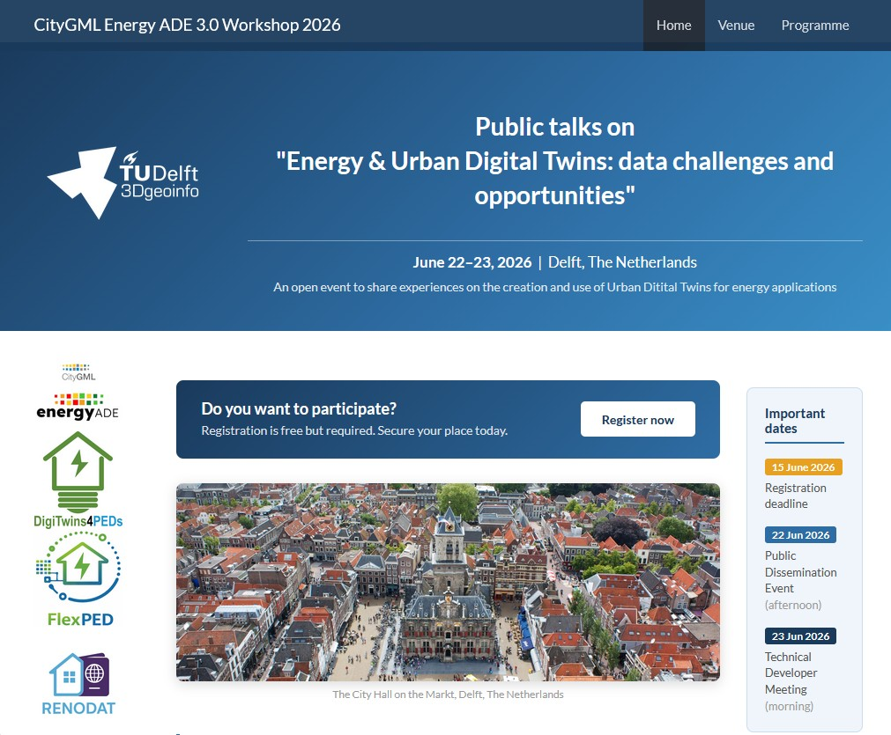
Oscar Roman has successfully defended his PhD dissertation
titled "Scan-to-Energy Digital Twins (Scan-to-EDTs): Automatic generation of Energy Digital Twins from 3D point clouds"
.
Oscar carried out part of his PhD research while visiting our group in 2025.
Congratulations Oscar!
Members of our group have contributed four presentations to the 5th 4TU/14UAS Research Day on Digitalization of the Built Environment. The event was organised by the University of Twente.
Contributions from our group spanned ongoing work on urban energy modelling, semantic 3D city models, and Urban Digital Twins.
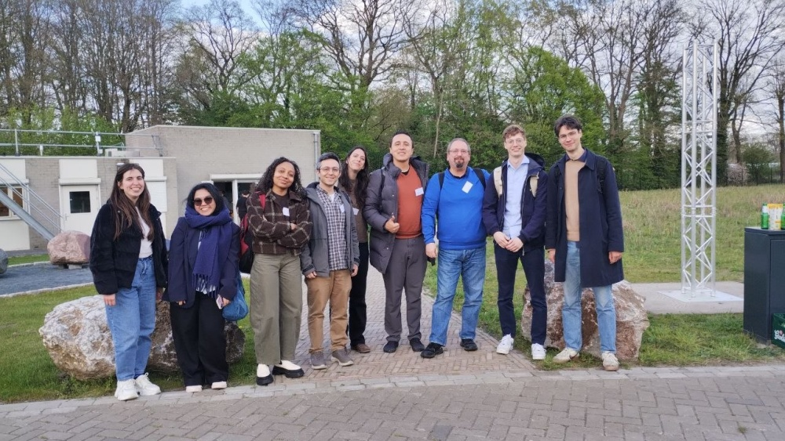
Kick-off of EU project FlexPED
The DUT project FlexPED has started and will continue for 3 years. FlexPED will explore how a standard Urban Digital Twin platform, combined with an AI-based simulation model, can support effective data management, real-time energy flow monitoring, and energy consumption optimization in Positive Energy Districts (PEDs).
As WP4 leaders, we will contribute to the project in terms of data modelling, standardisation and definition of APIs to be implemented in the Urban Digital Twin platform.
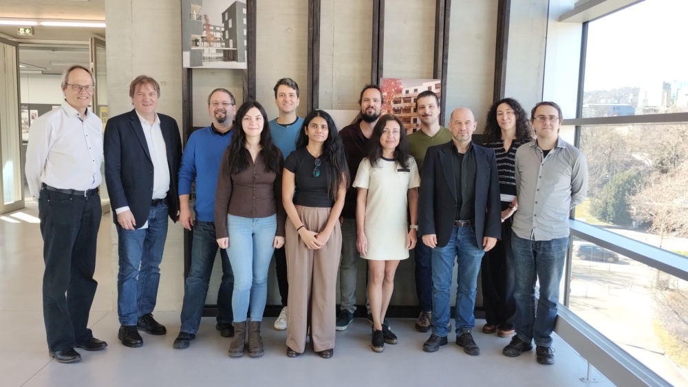
PhD defence, Camilo León-Sánchez
Camilo León-Sánchez has successfully defended his PhD dissertation titled "Enhancing Urban Energy Applications through Semantic 3D City Models and Open Data: The Case of the Netherlands."
The research was conducted under the supervision of promoter Jantien Stoter and copromoter Giorgio Agugiaro. The doctoral committee included Volker Coors, Jérôme Kaempf, Henk Visscher, and Laure Itard.
The full dissertation and propositions are available here.

The NWO-funded project RenoDAT will push the acceleration of building energy renovations by addressing data governance, ownership, privacy, and harmonisation gaps in the implementation of Building Renovation Passports,developing a reliable data infrastructure for better renovation quality and climate goals.
As WP1 leaders, we will focus on the data requirements and data governance for the Renovation Passport.
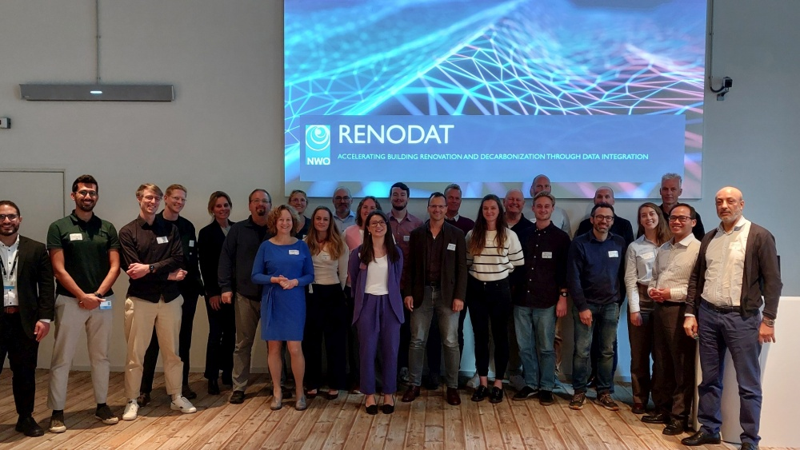
3DGeoinfo & Smart Data Smart Cities conferences
The force is strong with the 3D Geoinformation group in Japan! :-) From the UrbäNRG LAb, Weixiao Gao, Camilo León-Sánchez and Giorgio Agugiaro, have presented results from various projects (e.g. DigiTwin4PEDs, Energy ADE).
Additionally, Camilo León-Sánchez has won a best paper award for young reserchers
for his paper on "Lessons learnt from the integration of open data and semantic 3D city models
for urban building energy modelling in the Netherlands."
Congratulations Camilo!
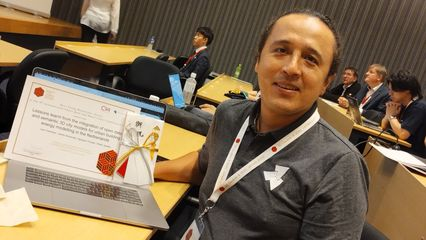
Strong presence of the 3D Geoinformation group in Vigo! From the UrbäNRG Lab, Weixiao Gao, Camilo León-Sánchez and Giorgio Agugiaro, have presented results from ongoing research topics.
Additionally, Weixiao Gao has won a best paper award
for his paper on "Filling holes in LoD2 building models."
The paper can be downloaded here
Congratulations Weixiao!
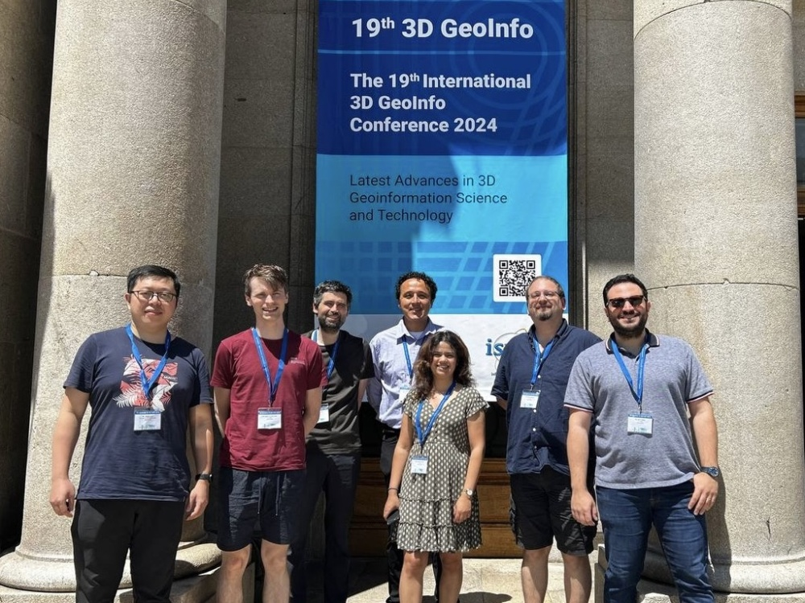
The 3rd 4TU/14UAS Research Day on Digitalization of the Built Environment, an event that we have organised together with InHolland and The Hague University of Applied Sciences, has seen the attendance of circa 70 people with lots of interesting presentations and exchanges between the participants.
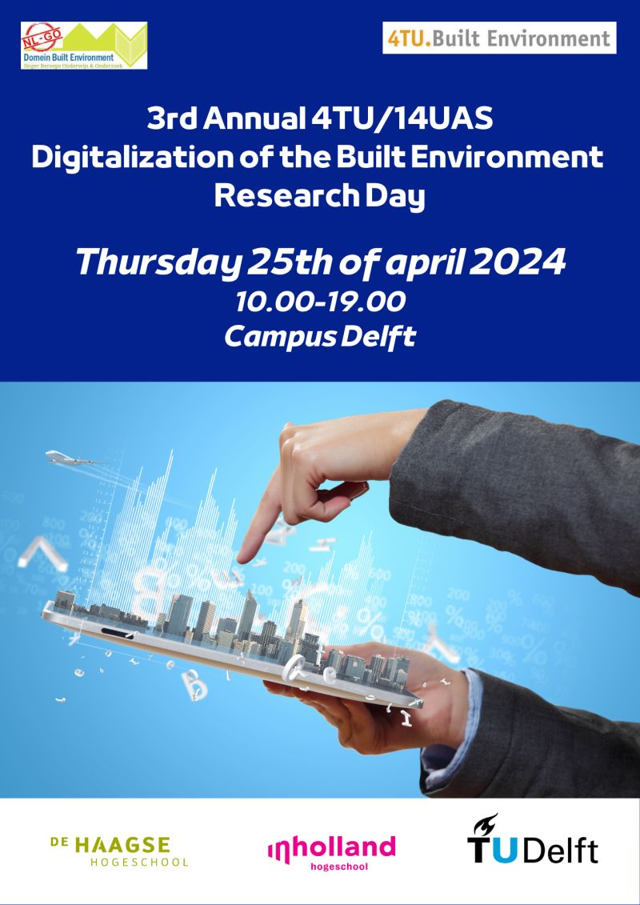
Kick-off of EU project DigiTwins4PEDs
The DigiTwins4PEDs has started and will continue for 2.5 years. The project will use Urban Digital Twins as a digital representation of the real world, opening up a wide range of possibilities for modeling the energy aspects of cities. This idea is to create a platform for residents and stakeholders to exchange information, enabling them to visualize various PED scenarios before their actual implementation.
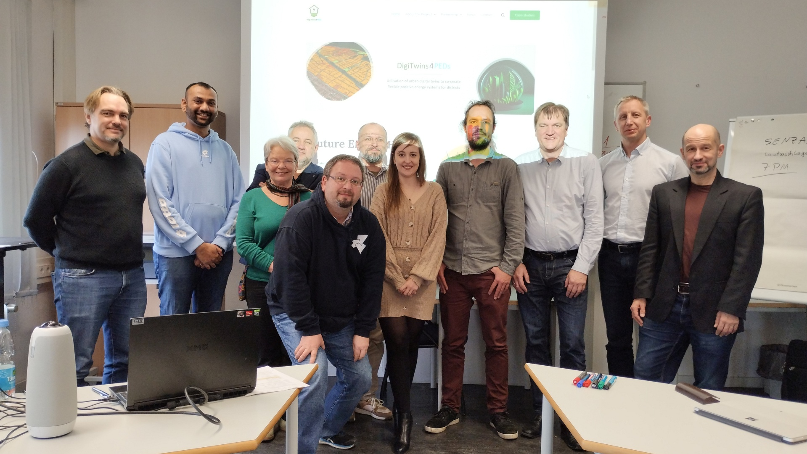
PhD defence, María Sánchez Aparicio
María Sánchez Aparicio has successfully defended her PhD dissertation
titled "Geometric characterization of urban environments and their photovoltaic potential:
evaluation of lidar data for urban electrification".
María carried out part of her PhD research while visiting our group in 2022.
Congratulations María!
The text of the dissertation is available here.
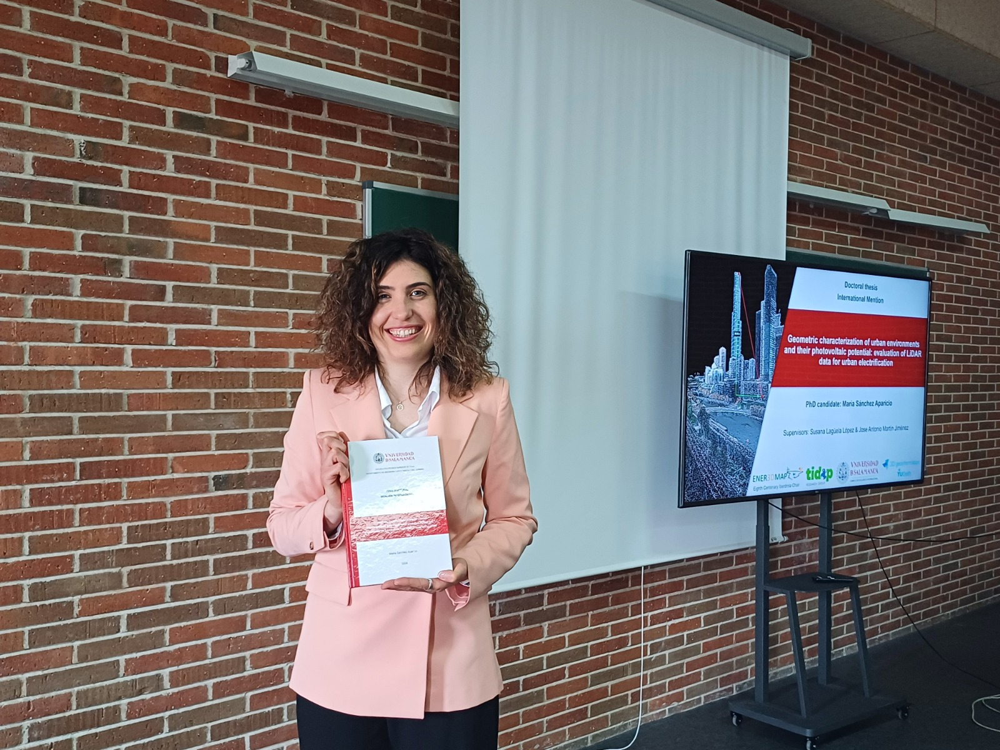
The 3D Geoinformation group has given several presentations in München! From the UrbäNRG Lab, Camilo León-Sánchez and Giorgio Agugiaro, have presented results from ongoing research topics.
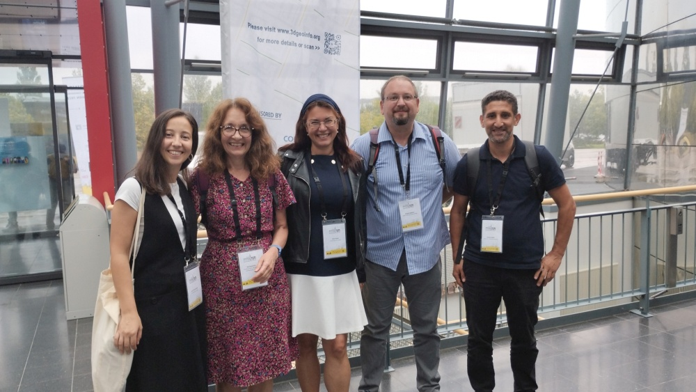
3DGeoinfo and Smart Data and Smart Cities conferences
We have participated in the congress and given some presentations! Check out our publications to find out more!
We have participated in the congress and given some presentations! Check out our publications to find out more!
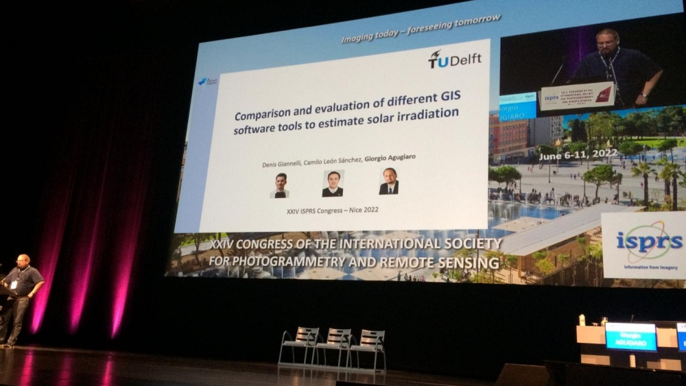